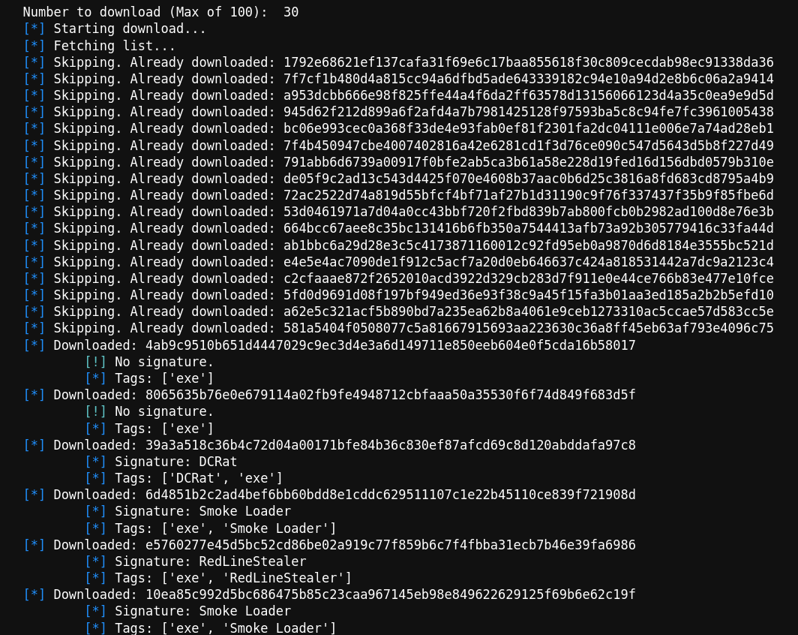
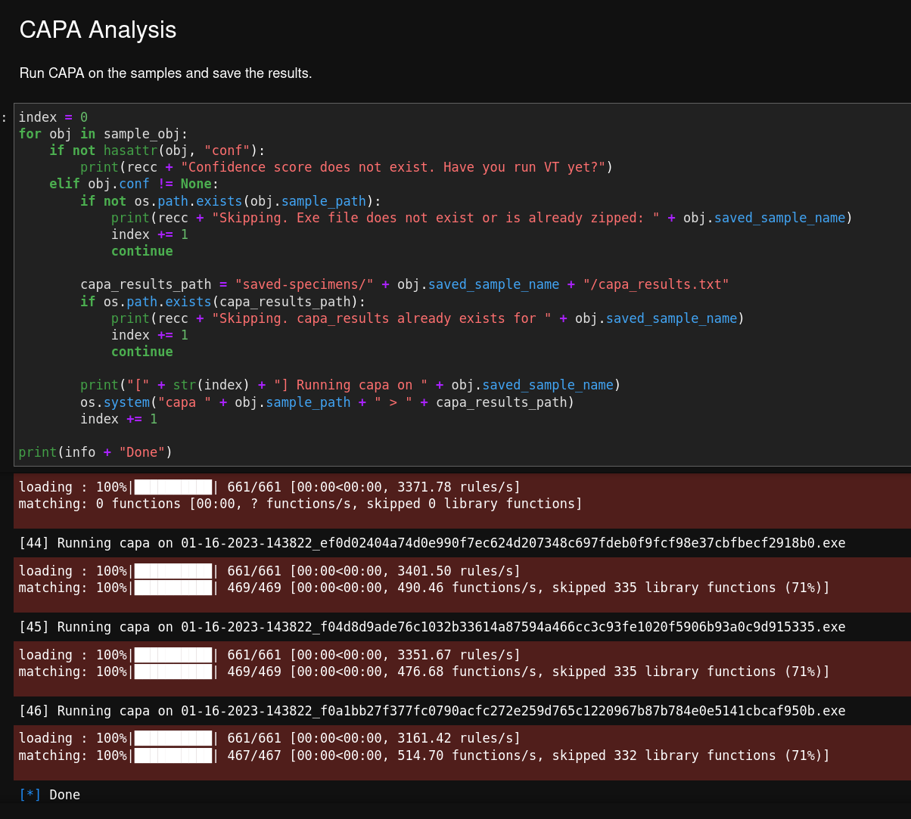

I came across the Blue-Jupyter project on Github while researching Jupyter notebooks. This short demo video got me excited, so I cloned the project and added some improvements that automate many things when I am looking for malware to investigate.
What are Jupyter Notebooks?
For readers who may be unfamiliar, Jupyter Notebooks are a web-based tool that allows users to create and share documents that contain live code, equations, visualizations, and narrative text. They are a popular tool among data scientists and researchers but have also adapted for use in other fields, such as cybersecurity.
My Additions to the Blue-Jupyter
Many of the changes I've made are focused on automating the process of quickly looking for interesting new samples to investigate.
One addition to the notebook is the automated downloading of samples from Malware Bazaar. This can download a maximum of 100 samples continuously. Additional information is listed to highlight some interesting points about the sample, like the malware signature. It also can skip samples that have already been downloaded to save bandwidth.

The second significant addition is the automated generation of Capa results for each downloaded sample. This makes it easy to see which malware has a particular capability so I can quickly see which ones are interesting enough to investigate further.

I also added minor improvements like error handling, additional logging for troubleshooting, and some cleanup code just in case I want to start fresh.
Check it out
If you are interested in checking it out, you can view my fork of the repository here. I did not request for a pull request on the original branch because I've changed a lot of things that the original owner might not prefer to have. Of course, I encourage everyone to fork what I made and make it their own. That's the beauty of Jupyter notebooks, anyway.